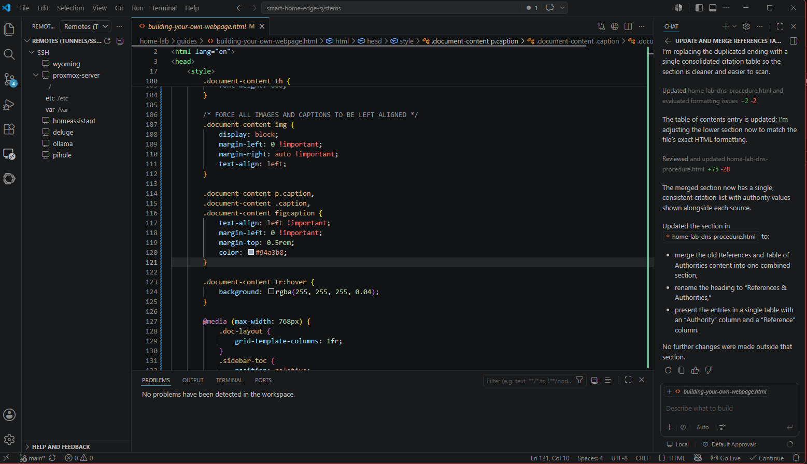

Figure 1: VS Code Main Screen
Introduction
VS Code?
A home lab needs tools to develop and manage its internal gears that are constantly turning, keep track of your home, and make sure it is protected from attacks. The primary tool used is Microsoft's VS Code. I have found it to be the overall easiest, best, and most complete tool available in the marketplace for DIYers. Not only is the main tool free, but it also allows for many plugins and add-ons to tune it for almost any practical purpose. There are a lot of industries that use this tool because of it’s versatility.
Choosing a development environment is one of the most important foundational decisions you'll make. While traditional, heavy IDEs (Integrated Development Environments) like Microsoft Visual Studio, IntelliJ IDEA, or Xcode are incredibly powerful, Visual Studio Code (VS Code) has become the industry standard for both beginners and advanced developers.
Why would you want to use VS Code over traditional IDEs, focused on the architectural benefits and day-to-day advantages.
1. The "Sweet Spot" Between a Text Editor and a Heavy IDE
Traditional IDEs are notorious for being resource-heavy. They come pre-packaged with millions of lines of code, compilers, and tools you might never use, causing long launch times and high RAM consumption. On the other end of the spectrum, basic text editors (like Notepad++ or Sublime Text) are lightweight but lack deep programming intelligence.
Why VS Code Wins: It uses a lean, modular architecture. Out of the box, it acts as a lightning-fast text editor. However, it features a highly optimized Extension Marketplace. You only install the exact tools, compilers, and language support you need for your current project. If you are writing a simple HTML page, your editor stays lightweight; if you transition to Python, you turn on Python intelligence with a single click.
2. Unmatched Ecosystem and Future-Proofing
Because VS Code is open-source and backed by Microsoft, it has cultivated the largest developer ecosystem in the world.
Universal Language Support: In a dedicated IDE like PyCharm, you are largely locked into Python. If your project suddenly requires a JavaScript frontend, a SQL database, and some Bash scripts, a specialized IDE can struggle. VS Code handles multi-language polyglot projects seamlessly.
Cutting-Edge Tooling First: When breakthrough development tools are created—such as Continue and Ollama for local AI execution, or advanced cloud-dev spaces—the creators almost always build their first and most stable plugins for VS Code. You get access to the future of development months before proprietary IDEs implement them.
3. Native Remote and Containerized Development
In modern workflows, running code directly on your local laptop is becoming obsolete due to security risks and hardware limitations.
Why VS Code Wins: Traditional IDEs often require you to download your entire project locally to index files. VS Code’s Remote - SSH and Dev Containers architecture works differently: the editor splits itself in half. The visual user interface stays on your laptop, but the actual extension engine and file index run directly on a remote server or a local Docker container. This allows you to edit files on a massive cloud server with the exact same speed and fluidity as editing a file on your desktop.
4. Uniformity Across All Operating Systems
If you work in a team or use multiple computers, platform consistency matters. Xcode only runs on macOS; certain enterprise IDEs run poorly outside of Windows.
Why VS Code Wins: VS Code behaves identically whether you are on Windows, macOS, or Linux. Your custom keyboard shortcuts, user interface themes, global automation scripts, and extensions sync perfectly across all your devices via your GitHub or Microsoft account. You never have to re-learn an interface when switching operating systems.
| Feature | Heavy IDEs (e.g., Visual Studio, IntelliJ) | VS Code |
|---|---|---|
| Startup Speed | Slow (loads entire framework up front) | Fast (instantaneous launch) |
| Resource Usage | High RAM and CPU footprint | Low to Medium footprint |
| Flexibility | Rigid; built for specific languages/workflows | Fluid; adapts to any language via extensions |
| Remote Coding | Often clunky or requires expensive add-ons | Native, seamless via Remote-SSH architecture |
| AI Customization | Locked into the vendor's cloud AI tools | Completely open (mix cloud and local AI tools) |
Table 1: Summary Comparison of Heavy IDEs over VS Code
| Action | Windows / Linux | macOS |
|---|---|---|
| Command Palette (Access all settings/tools) | Ctrl + Shift + P | Cmd + Shift + P |
| Quick Open (Find/Open files) | Ctrl + P | Cmd + P |
| Integrated Terminal (Toggle open/close) | Ctrl + ` | Ctrl + ` |
| Multi-Cursor Selection | Ctrl + Click / Ctrl + Alt + Down | Cmd + Click / Opt + Cmd + Down |
| Trigger Autocomplete / Intellisense | Ctrl + Space | Ctrl + Space |
| Format Document | Shift + Alt + F | Shift + Opt + F |
| Toggle Sidebar View | Ctrl + B | Cmd + B |
| Global Search across Files | Ctrl + Shift + F | Cmd + Shift + F |
Table 2: Essential Keyboard Shortcuts (Cheat Sheet)
5. The Core Extensions Installation Stack
Open the Extensions View by clicking the block icon on the left sidebar, or press Ctrl + Shift + X (Cmd + Shift + X).
Installing the following extensions sequentially by searching for them and clicking Install:
Type Prettier - Code Formatter -> Click Install.
Type Live Server -> Click Install.
Type Remote - SSH -> Click Install.
Type Python (by Microsoft) -> Click Install.
Type Git History -> Click Install.
Type XML Tools -> Click Install.
Type Error Lens -> Click Install.
6. Core VS Code Environments & Concepts
Editing & Autocomplete
IntelliSense: VS Code provides smart autocomplete out of the box for JavaScript, TypeScript, HTML, CSS, and JSON. It guesses code snippets, parameters, and variable definitions. Hit Ctrl + Space if it doesn't pop up automatically.
Code Navigation: Hold Ctrl (or Cmd) and click on a function name or variable to go directly to its definition or press F12.
Source Control (Git Integration)
VS Code features built-in Git support. The Source Control View (Ctrl + Shift + G) automatically detects changes in your workspace.
Staging and Committing: Click the + icon next to a modified file to stage it, write a message in the input box above, and click Commit (checkmark icon) to save changes locally.
Syncing: Use the Sync Changes button to pull and push to a remote repository like GitHub seamlessly.
Integrated Terminal
Use multiple shells simultaneously by clicking the + dropdown in the terminal panel. You can easily switch between Bash, PowerShell, or command prompts depending on the operating system environment.
Debugging & Testing
Run and Debug View (Ctrl + Shift + D): Set breakpoints by clicking to the left of line numbers in your code. Press F5 to spin up a debugger using configuration definitions mapped inside a .vscode/launch.json file.
Testing Panel: Organizes and runs Unit tests natively for languages like Python or JavaScript when frameworks are detected.
2. Comprehensive Extension Configuration Guide
To install any of these plugins, open the Extensions View (Ctrl + Shift + X), search for the name, and click Install.
Live Server
Use: Launches a local development server with a live-reload feature for static and dynamic web pages (HTML/CSS/JS).
Execution: Right-click an index.html file and select Open with Live Server, or click the Go Live button in the bottom status bar.
Remote - SSH, Remote Explorer, and Remote Editing
Use: Allows you to open any folder on a remote machine over an SSH server and take full advantage of VS Code's feature set.
Setup:
Install the Remote - SSH extension pack (which bundles Remote Explorer).
Click the green host icon in the bottom-left corner of the window.
Select Connect to Host... and enter your credentials (username@host-ip).
Use the Remote Explorer icon on the sidebar to manage multiple persistent remote server connections.
XML Tools & Python
XML Tools: Adds formatting, tree views, and XPath evaluations to XML editing. Format any messy XML using Shift + Alt + F.
Python Extension: Enables linting, debugging, code navigation, and Jupyter Notebook integrations. It will prompt you to select an interpreter path (virtual environments like venv or Conda) via the Command Palette (Select Interpreter).
Git History
Use: Provides a visual graph representation of log histories, file diff comparisons, and branch trajectories inside VS Code.
Execution: Open the Command Palette and type Git History: View History to inspect the timeline of commits visually.
3. Advanced Setup: AI Autocomplete & Chat with Continue + Ollama
Continue is a leading open-source AI code assistant extension that allows you to bring your own local or cloud models for code generation, inline chat, and autocomplete.
- Install & Set Up Ollama
- Run Ollama locally on your system to serve your privacy-first open models. We actually run these models on the Ollama server on our HomeLab Promox Server. These models are already installed at this time and we used the following commands to pull the models we will be using with these commands:
Bash
# Language & Coding Models
ollama run gemma3:4b
ollama run phi4:mini
ollama run qwen2.5-coder:7b
ollama run qwen2.5-coder:1.5b
# Embeddings Model (For codebase index indexing / RAG)
ollama pull nomic-embed-text
Table 3: Pulling Ollama Models
- Configure Continue (config.json)
Open the Continue extension settings or locate its global config file at ~/.continue/config.json. Replace or append to the configuration using the structure below to hook up your local Ollama models along with cloud-based Gemini keys:
JSON
{
"models": [
{
"title": "Gemma 3 4B",
"provider": "ollama",
"model": "gemma3:4b"
},
{
"title": "Phi 4 Mini",
"provider": "ollama",
"model": "phi4:mini"
},
{
"title": "Qwen 2.5 Coder 7B",
"provider": "ollama",
"model": "qwen2.5-coder:7b"
},
{
"title": "Gemini 3.5 Flash",
"provider": "gemini",
"model": "gemini-3.5-flash",
"apiKey": "YOUR_GEMINI_API_KEY"
},
{
"title": "Gemini 3.1 Flash Lite",
"provider": "gemini",
"model": "gemini-3.1-flash-lite",
"apiKey": "YOUR_GEMINI_API_KEY"
}
],
"tabAutocompleteModel": {
"title": "Qwen 2.5 Coder 1.5B",
"provider": "ollama",
"model": "qwen2.5-coder:1.5b"
},
"embeddingsProvider": {
"provider": "ollama",
"model": "nomic-embed-text"
}
}
Table 4: Hooking your Ollama Models
- Using Chat & Autocomplete with Continue
Inline Chat / Generation: Highlight a block of code and press Ctrl + I (or Cmd + I). Type your instructions (e.g., "add error handling") to generate inline edits directly.
Sidebar Chat Panel: Press Ctrl + L (or Cmd + L) to feed highlighted code snippets straight into the Continue chat window where you can choose between models (like Gemini 3.5 Flash for complex logic or Gemma 3 for local exploration).
Autocomplete: As you type, the configured tabAutocompleteModel (Qwen 2.5 Coder 1.5B) will provide gray inline code suggestions. Press Tab to accept them.
5. Recommended Settings for Generic Use & Site Maintenance
To open your global settings profile in a code-editable format, open the Command Palette (Ctrl + Shift + P) and select Preferences: Open User Settings (JSON). Add these configuration enhancements to stabilize generic text editing, scripting, and site file maintenance
JSON
{
// Layout and Editing Smoothness
"editor.wordWrap": "on",
"editor.minimap.enabled": false,
"editor.smoothScrolling": true,
"editor.cursorBlinking": "smooth",
"editor.formatOnSave": true,
// File and Trim Utilities for clean site deployment
"files.trimTrailingWhitespace": true,
"files.insertFinalNewline": true,
"files.autoSave": "afterDelay",
"files.autoSaveDelay": 1000,
// Terminal optimization across Platforms
"terminal.integrated.scrollback": 10000,
"terminal.integrated.copyOnSelection": true,
// Exclude cluttered files from clogging workspace searches
"search.exclude": {
"**/node_modules": true,
"**/dist": true,
"**/.git": true
}
}
Table 5: Global Settings
Additional Essential Plugins
Prettier - Code Formatter: Enforces a consistent style guide automatically across your HTML, CSS, JavaScript, and Markdown configurations.
Path Intellisense: Autocompletes filenames and directory paths in your statements natively as you link local site assets.
Error Lens: Highlights errors and warning strings inline directly on the active code line so you don't have to keep checking the logs panel.
Adding the Power to VS Code
To transition from using VS Code as a basic text editor to wielding it like an absolute powerhouse, you need to understand not just what buttons to press, but how the underlying systems talk to each other and why specific configurations change your entire workflow.
Orchestrating Local & Cloud AI (Continue + Ollama)
Most developers treat AI extensions like a generic web chat window pasted into their sidebar. By deeply configuring Continue with a local runner like Ollama, you are decoupling your code assistant from a single provider. You can route lightning-fast local models for line-by-line typing (autocomplete), use mid-tier reasoning models for targeted edits, and invoke premium cloud models (like Gemini) only when you need heavy-duty structural architectural advice.
Advanced Human-AI Workflows
Targeted Context Control (@ tags): When chatting with Continue (Ctrl + L), never just ask "How do I fix this error?" Type @ to pull open the context list. Select @codebase to automatically analyze your whole project, or @terminal to automatically inject the last failing command line error directly into the AI prompt.
Multi-file traversing using Copilot: A better answer to working with entire directory structures or multiple files is to ask Continue directly: What command would I use to ask my VS Code Chat session to do this . . .? It will then reply with a command that you can paste into the normal chat window. Remember when doing this, try to do as many tasks at once to keep the chat window from parsing your entire directory structure at once.
The Inline Refactor (Ctrl + I): Highlight a messy function, press Ctrl + I, and type /refactor. Continue uses your default edit role model (qwen2.5-coder:7b) to perform in-place code adjustments. You can preview the diff layout before accepting it with a click.
Advanced File Maintenance & Global Automation
Advanced editing is about eliminating "janitorial" actions—manually formatting files, deleting stray spaces, or running cleanups right before deploying changes to a live site. Setting up rule automation ensures every file you save complies with clean deployment practices automatically.
Open your Command Palette (Ctrl + Shift + P or Cmd + Shift + P), type Preferences: Open User Settings (JSON), and merge these keys:
JSON
{
// Automation on Save
"editor.formatOnSave": true,
"files.trimTrailingWhitespace": true,
"files.insertFinalNewline": true,
"files.autoSave": "afterDelay",
"files.autoSaveDelay": 2000,
// Speed and Visual Scannability
"editor.minimap.enabled": false,
"editor.wordWrap": "on",
"editor.smoothScrolling": true,
"editor.cursorBlinking": "smooth",
"search.followSymlinks": false,
"search.exclude": {
"**/node_modules": true,
"**/dist": true,
"**/.git": true,
"**/.continue": true
}
}
Table 6: File Maintenance and Automation
What di=oes this do for you? editor.formatOnSave + Prettier: When paired with the Prettier extension, VS Code intercepts your save trigger, rewrites all layout indentations perfectly, and formats tags cleanly.
files.trimTrailingWhitespace: Deletes any invisible trailing spaces at the end of lines. Stray spaces can cause massive, noisy text differences when shipping files to version control repositories.
search.exclude: Prevents massive build directories (node_modules) from bloating your global text searches, rendering file indexing instantaneous.
Fluid Version Control & Shell Mastery
Advanced Git tracking shouldn't mean jumping out of your editor into an external terminal app just to trace who wrote a piece of code. Combining native staging tools with visual logging histories allows you to debug historical codebase drift right alongside your open text tabs.
The Built-in Git Workflow
When you edit a file, a colored bar appears in your text gutter (left of line numbers): Green means new code lines, Blue means modified lines.
Hit Ctrl + Shift + G to pop over to the Source Control tray.
Hover over a modified file and click the + icon (Stage Changes). This isolates the file for commit.
Type a short description in the message box and hit Commit. Your changes are safely snapshot locally.
Deep Trajectory Audits via Git History
How: Install the Git History extension. Open your Command Palette and choose Git History: View History.
Why: This opens an interactive branch railway tracking system. You can select any past commit, click a file, and compare exactly how it looked three months ago versus right now, allowing you to instantly identify when a bug crept into production.
Multi-Shell Management (Bash & PowerShell)
Advanced setups utilize the best terminal engine for the task.
Open your terminal panel via Ctrl + ` .
Look at the top right of the terminal window and click the dropdown arrow next to the + sign.
You can spin up a Bash shell instance to run Linux-style web server automation commands, while simultaneously running a PowerShell instance to manipulate native system assets. Drag-and-drop the terminal tabs to split them horizontally to monitor both side-by-side.
Remote Operations & Clean Workspaces
Running code environments directly on your personal computer can slow down your system and clutter your hard drive. Using remote connection hooks allows you to run high-performance web servers, script parameters, and production environments on an isolated cloud server or separate machine entirely, while using your local VS Code window as an incredibly fast visual interface.
Remote SSH & Editing Setup
Install the Remote - SSH extension pack.
Click the green icon at the absolute bottom-left corner of your VS Code layout frame (Open a Remote Window).
Select Connect to Host..., and type your target server string (e.g., root@192.168.1.50).
VS Code securely establishes a tunnel connection, re-initializes its core engine on the server, and refreshes.
When you go to File > Open Folder, you are now exploring the remote server's file storage layer. Editing text files, executing files via the terminal, or testing layouts happens entirely on the remote platform in real time.
Table 7: Remote SSH setup
Remote Explorer Utility
Use the Remote Explorer icon (Activity Bar on the left) to view your remote machines.
You can forward server application ports easily. If your remote backend is running a local web address framework on port 8000, add it under the Ports forwarding panel. You can then view the live application on your local computer's browser at http://localhost:8000.
Debugging & Testing Workspaces
Breakpoints: Click just to the left of your code line numbers to drop a glowing red marker.
Execution: Head to Run and Debug (Ctrl + Shift + D) and select your script launcher configuration. When code executes, VS Code will freeze operations exactly on your marker line. You can inspect variables, read data object states, and test program paths interactively before letting execution resume.
Harnessing the Modern Development Workspace: An Advanced Technical White Paper on Visual Studio Code Optimization
Visual Studio Code (VS Code) has evolved from a lightweight text editor into an enterprise-grade, highly extensible development environment. However, many users interact only with its superficial layers, treating it as a basic file-editing grid. This paper provides a highly comprehensive, advanced operational framework for transforming VS Code into a localized, privacy-focused, AI-accelerated development hub.
By strategically integrating local-first Large Language Models (LLMs) via Ollama, establishing secure remote execution context over SSH, and tuning workspace automation systems, you can eliminate operational overhead, ensure absolute data sovereignty, and maximize code velocity.
Core Environmental Architecture & Global Automation
To build an advanced workspace, you must eliminate manual "janitorial" tasks—such as trailing whitespace remediation, manual layout alignment, and directory searching overhead. VS Code manages these configurations globally via a underlying settings.json profile.
Step-by-Step Implementation: Overhauling Global Behavior
Launch VS Code. Open the central Command Palette using the global access key:
Windows/Linux: Ctrl + Shift + P
macOS: Cmd + Shift + P
Begin typing Preferences: Open User Settings (JSON). Select this item from the filtered dropdown to open the raw payload settings.
Replace or intelligently merge your existing JSON configuration object with the highly tuned parameters detailed below:
JSON
{
"editor.wordWrap": "on",
"editor.minimap.enabled": false,
"editor.smoothScrolling": true,
"editor.cursorBlinking": "smooth",
"editor.formatOnSave": true,
"editor.defaultFormatter": "esbenp.prettier-vscode",
"files.trimTrailingWhitespace": true,
"files.insertFinalNewline": true,
"files.autoSave": "afterDelay",
"files.autoSaveDelay": 2000,
"terminal.integrated.scrollback": 10000,
"terminal.integrated.copyOnSelection": true,
"search.followSymlinks": false,
"search.exclude": {
"**/node_modules": true,
"**/dist": true,
"**/.git": true,
"**/.continue": true,
"**/.venv": true
}
}
Table 8: Raw Payload Settings
Technical Rationale:
editor.formatOnSave + editor.defaultFormatter: By anchoring your workspace to Prettier, VS Code intercepts the file buffer write sequence. It parses the document AST (Abstract Syntax Tree) and automatically forces consistent indentation, tag enclosures, and line-breaks. This eliminates stylistic differences in version control tracking.
files.trimTrailingWhitespace & files.insertFinalNewline: Invisible spaces at the end of lines create messy git diff logs. Forcing a trailing newline ensures text files comply with POSIX standards, preventing shell compilation utilities from breaking when scanning scripts.
search.exclude Tuning: Large project trees like JavaScript node_modules or Python .venv contain millions of lines of dependency code. Excluding these structures shifts file-indexing routines directly into memory, rendering global keyword lookups instantly responsive.
💡 Pro-Tip: If you maintain different formatting profiles for various technologies, you can isolate settings by language blocks within the same JSON file. For example:
JSON
"[xml]": {
"editor.defaultFormatter": "DotJoshJohnson.xml"
}
Local-First AI Integration (Continue + Ollama Pipeline)
Relying entirely on public AI extensions presents significant trade-offs in data privacy, data transmission costs, and offline availability. By coupling Continue (an advanced open-source orchestration layer) with Ollama (a local hardware-accelerated model runner), you create a dual-engine environment. This enables the use of lightning-fast local models for background line autocomplete, alongside premium cloud models for deep reasoning tasks.
+--------------------------------------------------------------------------+
| VS CODE WORKSPACE |
| |
| +------------------------------------+ +-------------------------+ |
| | Continue Chat | | Inline Autocomplete | |
| | (Ctrl + L / Ctrl + I) | | (Tab-to-Accept) | |
| +------------------------------------+ +-------------------------+ |
+---------------------+-----------------------------------+----------------+
| |
v v
+---------------------+-----------------------------------+----------------+
| CONTINUE ORCHESTRATION LAYER |
| (~/.continue/config.yaml) |
+---------------------+-----------------------------------+----------------+
| |
(Local IPC / Network Requests) (Cloud API Requests)
| |
v v
+---------------------+-------------------+ +---------+----------------+
| OLLAMA ENGINE | | GOOGLE GEMINI API |
| | | |
| [qwen2.5-coder] [nomic-embed-text] | | [gemini-3.5-flash] |
| [gemma3] [phi4-mini] | | [gemini-3.1-flash-lite] |
+-----------------------------------------+ +--------------------------+
Table 9: Architectural Blueprint
Tactical AI Workflows & Commands
Contextual Grounding via @ Operators: Within the Continue chat view (Ctrl + L), avoid submitting generic questions. Type @ to invoke context routers. Selecting @codebase triggers the local nomic-embed-text vector engine to chunk and parse your local files, providing the AI with precise workspace context. Use @terminal to automatically append your active shell's error logs to your query.
Inline Refactoring Pipeline (Ctrl + I): Highlight an unoptimized block of code or an improperly closed data structure. Press Ctrl + I (or Cmd + I on macOS) to open the inline code generation bar. Input /refactor or a customized directive like “Convert this structure into an asynchronous loop”. The local qwen2.5-coder:7b model will render an inline diff layout, allowing you to accept or reject changes directly in place.
Persistent Remote Environments (SSH & Port Topology)
Advanced software architecture and site maintenance often dictate that code should not be executed locally on your laptop, but rather within isolated environments—such as a remote server, an LXC container, or a dedicated lab environment. The Remote - SSH extension decouples your user interface from the underlying execution environment.
Deep-Dive Tool Integration & Language Frameworks
To operate VS Code at an advanced level, you must know how to fully utilize your extensions and integrate your system tools cleanly.
High-Fidelity Source Control (Git Integration & Git History)
The Gutter Tracking System: Modified files display structural indicators in the editor gutter (the column immediately to the left of the line numbers). A green block indicates newly inserted source lines, a blue block indicates modified logic, and a red arrow indicates deleted blocks. Clicking these indicators opens a local peek diff view, allowing you to roll back specific lines without a full git reset.
The Source Control Tray (Ctrl + Shift + G): Avoid running continuous git add sequences via the command line. Stage specific lines or files cleanly by clicking the + icon next to the file name in the Source Control side panel. Type an explicit message in the input field above, and press Ctrl + Enter to commit your changes to your local history tracking.
Visual Graph Analysis: Open the Command Palette and execute Git History: View History. This transforms your terminal container into an interactive graph layout. This allows you to visually track branch points, identify merging paths, and inspect the structural evolution of files across different timelines.
Multi-Shell Terminal Topology
The terminal system inside VS Code should be treated as an interactive multi-tool.
Open the panel view using the global key: Ctrl + ` .
On the terminal task pane header, locate the + Dropdown Control. Here, you can configure and switch between Bash, PowerShell, and alternative runtime interfaces based on your environment.
Click Split Terminal (Ctrl + \) to tile your terminal interfaces side-by-side. This allows you to monitor backend system performance logs on a Linux Bash instance on one side, while running platform automation scripts inside PowerShell on the other.
+-----------------------------------+-----------------------------------+
| TERMINAL 1: BASH | TERMINAL 2: POWERSHELL |
| | |
| $ tail -f /var/log/nginx/error.log| PS C:\> .\deploy-site-assets.ps1 |
| 2026/07/05 17:29:12 [error] ... | [INFO] Copying static targets... |
| 2026/07/05 17:30:05 [error] ... | [SUCCESS] Pipeline complete. |
| | |
+-----------------------------------+-----------------------------------+
Table 10: Side by Side Workflow
Precision Script Diagnostics (Python Environment Optimization)
The core Python extension relies on explicit path configurations to avoid dependency clutter:
Open a workspace folder containing a Python project.
Invoke the Command Palette and enter Python: Select Interpreter.
Choose the specific virtual environment path mapping (e.g., .venv/bin/python or your Conda configuration). This updates the language server to index only the local modules active for that project, eliminating false import errors and optimizing autocompletion behavior.
Production Site Maintenance Tools
Live Server Operations: For static sites, single-page applications, and media asset adjustments, avoid manually refreshing browser tabs. Right-click your entry point file (e.g., index.html) and select Open with Live Server. This initializes an internal Node.js server engine. Any document buffer updates trigger an instant hot-reload across your active browser windows via a WebSocket connection.
XML Tools Data Parsing: When handling configuration engines, site maps, or large XML/SVG datasets, open the Command Palette and execute XML Tools: Format Document (Shift + Alt + F). This structures cluttered minified payloads into clean hierarchies. You can also press Ctrl + Shift + P and search for XPath to evaluate data paths or inspect structural queries instantly.
Summary Troubleshooting & Validation Protocols
When building an advanced development environment, configurations can sometimes conflict. Use this matrix to quickly resolve common issues:
| Manifested Issue | Likely Root Cause | Resolution Protocol |
|---|---|---|
| Local AI Autocomplete fails to render gray inline text | Ollama background service is inactive or model parameter bindings are broken. | Run ollama list in your host terminal to verify that qwen2.5-coder:1.5b is active. Check config.yaml to confirm the name string matches perfectly. |
| Remote SSH connection drops or times out repeatedly | Host keys have shifted or your SSH authentication agent is missing keys. | Execute ssh-add -L on your local machine to verify your identity keys are loaded. If the host signature has changed, update your ~/.ssh/known_hosts file. |
| Format on Save fails to trigger on file write actions | Multiple formatting plugins are competing for dominance within the active workspace. | Open your workspace settings, locate the conflicting language profile, and explicitly define your primary formatting tool via "editor.defaultFormatter": "esbenp.prettier-vscode". |
Table 11: Troubleshooting VS Code
Testing your VS Code Environment
Mastering AI Context and Inline Generation
Create a new test file named demo.py and open it.
Test Inline Code Generation:
Press Ctrl + I (Cmd + I on Mac). A small prompt bar will appear right inside your text editor.
Type: Create a Python function that calculates Fibonacci numbers up to n and press Enter.
Watch the local qwen2.5-coder:7b model generate the code line by line. Press Ctrl + Enter to accept the code.
Test Context-Aware Chatting:
Highlight the newly generated code block with your mouse.
Press Ctrl + L (Cmd + L on Mac). This instantly moves the highlighted code into the Continue sidebar chat window.
In the chat box, type @ to open the context dropdown.
Select @codebase.
Type your query next to it: Are there any performance bottlenecks or edge cases in this implementation?
Press Enter. The model will read your entire project directory using local vector embeddings via nomic-embed-text and suggest optimizations.
Step-by-Step: Establishing Persistent Remote SSH Connections
Step 3.1: Generating and Deploying SSH Credentials
If you already use SSH keys, skip to Step 3.2. Otherwise, let's configure a secure connection:
Open your native host computer terminal (PowerShell or Mac Terminal).
Generate an RSA cryptographic keypair by running:
Bash
ssh-keygen -t rsa -b 4096 -C "vs-code-remote-key"
(Press Enter through all prompts to accept the default file paths and leave the passphrase blank).
Push your public key to your remote server or home-lab host:
Mac/Linux: ssh-copy-id username@remote-server-ip
Windows (PowerShell):
PowerShell
cat ~/.ssh/id_rsa.pub | ssh username@remote-server-ip "mkdir -p ~/.ssh && cat >> ~/.ssh/authorized_keys"
Step 3.2: Setting Up VS Code Remote SSH Mapping
Inside VS Code, click the green connection icon in the absolute bottom-left corner of the window.
Select Connect to Host... from the dropdown menu at the top.
Select Add New SSH Host...
Enter the explicit SSH string: ssh username@remote-server-ip -A and hit Enter.
Choose your global configuration storage file (typically the first path listed: ~/.ssh/config).
Click the green button in the bottom-left corner again, select Connect to Host..., and click on the IP address/alias you just added.
A new, isolated VS Code window will open. Look at the bottom-left corner; it will read SSH: remote-server-ip to confirm you are now securely inside your remote machine.
Step 3.3: Configuring Remote Port Forwarding
While connected to your remote SSH server, open the integrated terminal inside VS Code (Ctrl + ` ).
Spin up a temporary Python web server instance on port 8000:
Bash
python3 -m http.server 8000
Look at the sidebar layout panel on the left. Click on the Remote Explorer icon (it looks like a monitor with a small network badge).
Locate the Ports section in the lower half of the sidebar.
Click Forward a Port (or click the + sign).
Input 8000 into the Port field and hit Enter.
Open your local web browser on your laptop/desktop and navigate to http://localhost:8000. You can now visually test your remote web applications locally through port 22.
Step-by-Step: Advanced Source Control & Script Environments
Step 4.1: Managing Production Assets via the Source Control Panel
Open a project folder containing a Git repository (File > Open Folder).
Make a small edit inside any file and save it. Notice the blue bar that appears in the gutter next to the line numbers indicating an uncommitted edit.
Press Ctrl + Shift + G to jump to the Source Control Panel.
Hover over the modified file under the Changes section. Click the small + icon (Stage Changes). This moves the file from the un-staged buffer area into the staging area.
In the text box at the top of the pane labeled Message, type your commit description: refactor: optimize core looping variables.
Press Ctrl + Enter (or Cmd + Enter on Mac) to commit the changes safely to your local history.
Step 4.2: Running a Visual Git History Audit
Open the Command Palette (Ctrl + Shift + P).
Type Git History: View History and hit Enter.
An interactive tab will open showing your project's commit tree.
Click on any commit in the list to reveal the file tree at that exact point in time.
Click on a specific file name inside that commit view and choose Compare with previous version. This displays a side-by-side color-coded comparison showing exactly what was added, modified, or deleted in that commit.
Step 4.3: Configuring isolated Python Working Interpreters
Open a workspace directory that contains a Python project.
Initialize an isolated virtual environment using your terminal pane (Ctrl + ` ):
Bash
python -m venv .venv
Open the Command Palette (Ctrl + Shift + P).
Type Python: Select Interpreter and hit Enter.
Select the path pointing inside your local project: ./venv/bin/python (or .\venv\Scripts\python.exe on Windows).
Notice that your language servers automatically clear out incorrect warning paths, and the Python version updates in the bottom right corner of your status bar.
Step 4.4: Deploying Live Server for Site Maintenance
Open an HTML project folder via File > Open Folder.
Locate your file structure in the file explorer (Ctrl + Shift + E).
Right-click on your primary file (e.g., index.html).
Select Open with Live Server from the context menu.
Your default system browser will open automatically and display the rendered page.
Split your screen so you can see both VS Code and your browser. Change any text inside a tag and hit save. The browser page will instantly refresh and reflect the updates without manual intervention.
Diagnostics & Automated Validation Testing
When configuring an advanced development environment, things can sometimes conflict or misbehave. Follow this verification sequence to test your setup:
Verification Routine A
Open an empty file inside VS Code.
Start typing standard programming boilerplate (e.g., def calculate_mean(values):).
Validation Check: Pause for 1.5 seconds.
Success: A light gray inline text completion proposal will wrap around your text cursor. Press Tab to accept it.
Failure/Nothing happens: Look at the bottom status bar on the right. Ensure that the Continue status indicator is green and active. Run ollama run qwen2.5-coder:1.5b in an external terminal to verify your computer's local hardware layer can serve the model correctly.
Inline Chat / Generation: Highlight a block of code and press Ctrl + I (or Cmd + I). Type your instructions (e.g., "add error handling") to generate inline edits directly.
Sidebar Chat Panel: Press Ctrl + L (or Cmd + L) to feed highlighted code snippets straight into the Continue chat window where you can choose between models (like Gemini 3.5 Flash for complex logic or Gemma 3 for local exploration).
Autocomplete: As you type, the configured tabAutocompleteModel (Qwen 2.5 Coder 1.5B) will provide gray inline code suggestions. Press Tab to accept them.
Verification Routine B: Format-on-Save Compliance
Open any code or configuration file (e.g., a .py, .html, or .json file).
Purposefully create messy layout indentations—for instance, indenting a line by 13 random spaces or leaving multiple blank lines at the bottom of the document.
Save the file (Ctrl + S).
Validation Check:
- Success: The document automatically snaps into a clean layout structure, match
Live Server
Use: Launches a local development server with a live-reload feature for static and dynamic web pages (HTML/CSS/JS).
Execution: Right-click an index.html file and select Open with Live Server, or click the Go Live button in the bottom status bar.
Remote - SSH, Remote Explorer, and Remote Editing
Use: Allows you to open any folder on a remote machine over an SSH server and take full advantage of VS Code's feature set.
Setup:
Install the Remote - SSH extension pack (which bundles Remote Explorer).
Click the green host icon in the bottom-left corner of the window.
Select Connect to Host... and enter your credentials (username@host-ip).
Use the Remote Explorer icon on the sidebar to manage multiple persistent remote server connections.
XML Tools & Python
XML Tools: Adds formatting, tree views, and XPath evaluations to XML editing. Format any messy XML using Shift + Alt + F.
Python Extension: Enables linting, debugging, code navigation, and Jupyter Notebook integrations. It will prompt you to select an interpreter path (virtual environments like venv or Conda) via the Command Palette (Select Interpreter).
Git History
Use: Provides a visual graph representation of log histories, file diff comparisons, and branch trajectories inside VS Code.
Execution: Open the Command Palette and type Git History: View History to inspect the timeline of commits visually.
Advanced Setup: AI Autocomplete & Chat with Continue + Ollama
Continue is a leading open-source AI code assistant extension that allows you to bring your own local or cloud models for code generation, inline chat, and autocomplete.
Step 1: Using Chat & Autocomplete with Continue
To transition from using VS Code as a basic text editor to wielding it like an absolute powerhouse, you need to understand not just what buttons to press, but how the underlying systems talk to each other and why specific configurations change your entire workflow.
Executive Summary
Visual Studio Code (VS Code) has evolved from a lightweight text editor into an enterprise-grade, highly extensible development environment. However, many users interact only with its superficial layers, treating it as a basic file-editing grid. This paper provides a highly comprehensive, advanced operational framework for transforming VS Code into a localized, privacy-focused, AI-accelerated development hub.
By strategically integrating local-first Large Language Models (LLMs) via Ollama, establishing secure remote execution context over SSH, and tuning workspace automation systems, you can eliminate operational overhead, ensure absolute data sovereignty, and maximize code velocity.